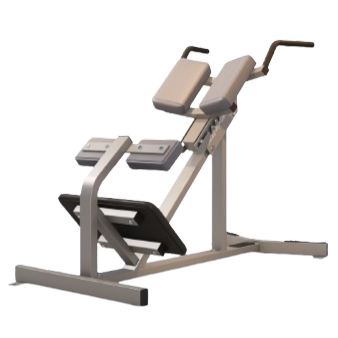
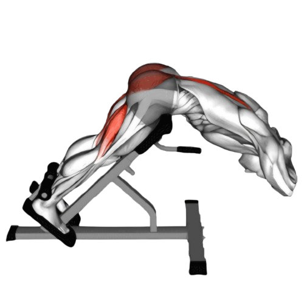
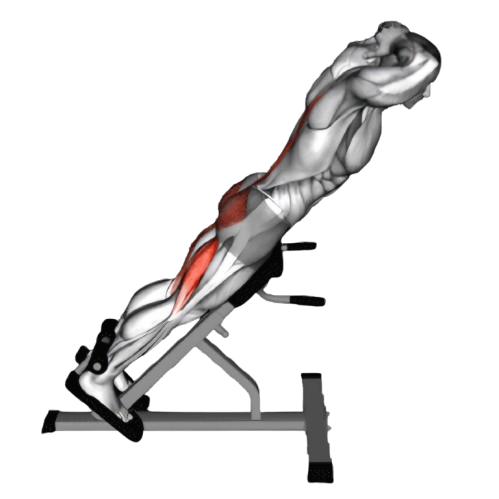

백 익스텐션

- 엉덩이를 패드에 고정한 상태로 몸을 앞으로 기울인다. 이때 허리는 자연스럽게 곧게 펴진 상태를 유지하고, 손은 가슴 앞이나 머리 뒤에 가볍게 올린다.
- 이때 호흡은 마신다.
- 천천히 상체를 들어 올리면서 허리와 엉덩이의 힘으로 몸을 세운다.
- 상체를 완전히 들어올려 허리 근육이 수축된 상태에서 1~2초간 유지한다.
- 천천히 몸을 내려 시작 자세로 돌아간다.
- 이때 호흡은 뱉는다.

주의사항
- 허리를 너무 과도하게 젖히거나, 등을 구부린 상태로 운동하지 않도록 주의해야 한다. 자세가 잘못되면 허리 부상의 원인이 될 수 있다.
- 편안한 범위 내에서 운동을 수행한다.
운동부위 및 효과
- 척추기립근, 엉덩이 근육, 햄스트링, 코어근육, 등 상부
- 허리와 엉덩이의 힘이 길러지면서 올바른 자세를 유지할 수 있게 되어, 허리 통증 완화 및 자세 교정 효과가 있다.